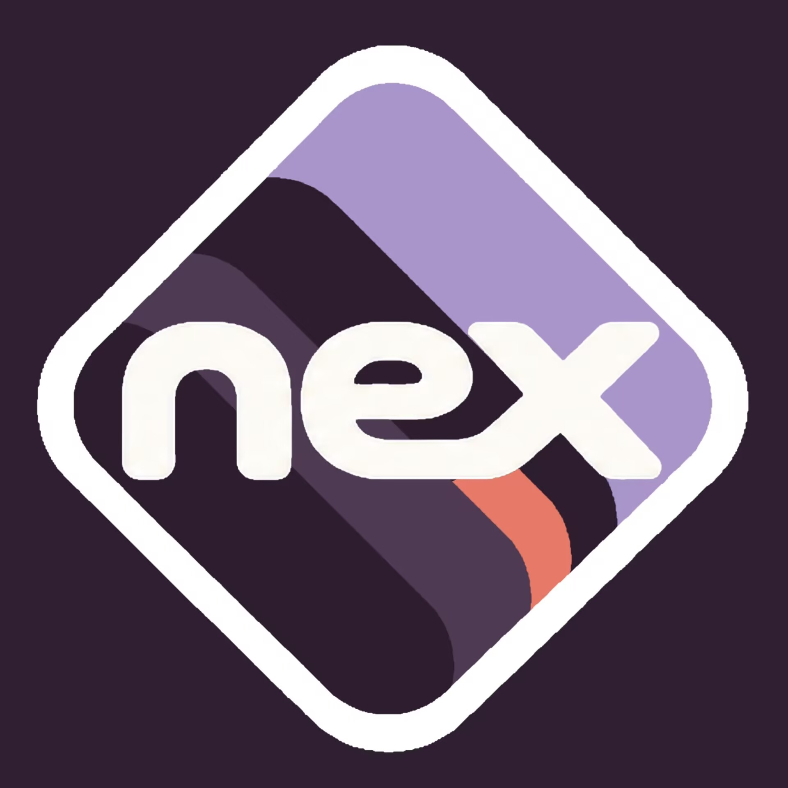

01 Heaps → 02 Rhythm Versa → 03 Nexoria
16 条记录 / 17 张原图 / 1 段视频
共 16 条记录
2025开发记录

2026开发记录


Vulkan
Vulkan 开发的留存记录
北狐提到，Vulkan 已经开发了一天。更早的相关历史记录已经丢失，现有材料从这条消息继续。
早期历史记录缺失；此日期不是已确认的开发起始日期。

查看原文记录
北狐提到vulkan已经整了一天，过去历史丢失


Vulkan
Vulkan on Android
记录留下了「vulkan on android」这条消息。消息中的图片已过期，文档仅保留了聊天截图。
运行图片已过期丢失。

查看原文记录
vulkan on android （图片过期丢失）


没有找到相关记录
ABOUT THIS ARCHIVE
把片段整理成历史。
本页整理自《史官》文档与后续补充的截图、视频，覆盖 2025 年 5 月 1 日至 2026 年 10 月 6 日的留存记录。正文作了简要整理，原文与影像一并保留，便于对照阅读。
记录按日期重新排序。原材料中缺失的历史、已过期的图片和不完整的时间均已注明；未补写无法确认的经历。「beap 原型初测成功」节点已补充可播放的测试视频。
在 GitHub 查看与维护档案 ↗